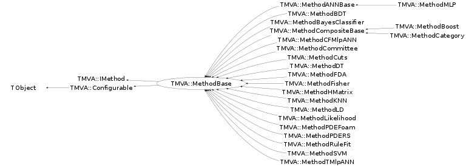

class TMVA::MethodBase: public TMVA::IMethod, public TMVA::Configurable
Virtual base Class for all MVA method MethodBase hosts several specific evaluation methods. The kind of MVA that provides optimal performance in an analysis strongly depends on the particular application. The evaluation factory provides a number of numerical benchmark results to directly assess the performance of the MVA training on the independent test sample. These are:
- The signal efficiency at three representative background efficiencies (which is 1 − rejection).
- The significance of an MVA estimator, defined by the difference between the MVA mean values for signal and background, divided by the quadratic sum of their root mean squares.
- The separation of an MVA x, defined by the integral ½∫(S(x) − B(x))2/(S(x) + B(x))dx, where S(x) and B(x) are the signal and background distributions, respectively. The separation is zero for identical signal and background MVA shapes, and it is one for disjunctive shapes.
- The average, ∫x μ(S(x))dx, of the signal μ-transform. The μ-transform of an MVA denotes the transformation that yields a uniform background distribution. In this way, the signal distributions S(x) can be directly compared among the various MVAs. The stronger S(x) peaks towards one, the better is the discrimination of the MVA. The μ-transform is documented here.
Function Members (Methods)
This is an abstract class, constructors will not be documented.
Look at the header to check for available constructors.
public:
protected:
private:
| void | AddClassesXMLTo(void* parent) const |
| virtual void | AddClassifierOutput(TMVA::Types::ETreeType type) |
| virtual void | AddClassifierOutputProb(TMVA::Types::ETreeType type) |
| void | AddInfoItem(void* gi, const TString& name, const TString& value) const |
| virtual void | AddMulticlassOutput(TMVA::Types::ETreeType type) |
| virtual void | AddRegressionOutput(TMVA::Types::ETreeType type) |
| void | AddSpectatorsXMLTo(void* parent) const |
| void | AddTargetsXMLTo(void* parent) const |
| void | AddVarsXMLTo(void* parent) const |
| void | CreateMVAPdfs() |
| static void | CreateVariableTransforms(const TString& trafoDefinition, TMVA::DataSetInfo& dataInfo, TMVA::TransformationHandler& transformationHandler, TMVA::MsgLogger& log) |
| void | DeclareBaseOptions() |
| TMVA::MethodBase::ECutOrientation | GetCutOrientation() const |
| Double_t | GetEffForRoot(Double_t) |
| Bool_t | GetLine(istream& fin, char* buf) |
| static Double_t | IGetEffForRoot(Double_t) |
| void | InitBase() |
| void | ProcessBaseOptions() |
| void | ReadClassesFromXML(void* clsnode) |
| void | ReadSpectatorsFromXML(void* specnode) |
| void | ReadStateFromXML(void* parent) |
| void | ReadTargetsFromXML(void* tarnode) |
| void | ReadVariablesFromXML(void* varnode) |
| void | ReadVarsFromStream(istream& istr) |
| void | ResetThisBase() |
| void | WriteStateToStream(ostream& tf) const |
| void | WriteStateToXML(void* parent) const |
| void | WriteVarsToStream(ostream& tf, const TString& prefix = "") const |
Data Members
public:
| enum EWeightFileType { | kROOT | |
| kTEXT | ||
| }; | ||
| enum ECutOrientation { | kNegative | |
| kPositive | ||
| }; | ||
| enum TObject::EStatusBits { | kCanDelete | |
| kMustCleanup | ||
| kObjInCanvas | ||
| kIsReferenced | ||
| kHasUUID | ||
| kCannotPick | ||
| kNoContextMenu | ||
| kInvalidObject | ||
| }; | ||
| enum TObject::[unnamed] { | kIsOnHeap | |
| kNotDeleted | ||
| kZombie | ||
| kBitMask | ||
| kSingleKey | ||
| kOverwrite | ||
| kWriteDelete | ||
| }; |
public:
| Bool_t | fSetupCompleted | is method setup |
| const TMVA::Event* | fTmpEvent | ! temporary event when testing on a different DataSet than the own one |
protected:
| TMVA::Types::EAnalysisType | fAnalysisType | method-mode : true --> regression, false --> classification |
| UInt_t | fBackgroundClass | index of the Background-class |
| vector<TString>* | fInputVars | vector of input variables used in MVA |
| vector<Float_t>* | fMulticlassReturnVal | holds the return-values for the multiclass classification |
| Int_t | fNbins | number of bins in input variable histograms |
| Int_t | fNbinsH | number of bins in evaluation histograms |
| Int_t | fNbinsMVAoutput | number of bins in MVA output histograms |
| TMVA::Ranking* | fRanking | pointer to ranking object (created by derived classifiers) |
| vector<Float_t>* | fRegressionReturnVal | holds the return-values for the regression |
| UInt_t | fSignalClass | index of the Signal-class |
private:
| TDirectory* | fBaseDir | base directory for the instance, needed to know where to jump back from localDir |
| Bool_t | fConstructedFromWeightFile | is it obtained from weight file? |
| TMVA::MethodBase::ECutOrientation | fCutOrientation | +1 if Sig>Bkg, -1 otherwise |
| TMVA::DataSetInfo& | fDataSetInfo | ! the data set information (sometimes needed) |
| TMVA::PDF* | fDefaultPDF | default PDF definitions |
| Bool_t | fDisableWriting | ! set to true in order to suppress writing to XML |
| TH1* | fEffS | efficiency histogram for rootfinder |
| vector<const std::vector<TMVA::Event*>*> | fEventCollections | if the method needs the complete event-collection, the transformed event coll. ist stored here. |
| TString | fFileDir | unix sub-directory for weight files (default: "weights") |
| Bool_t | fHasMVAPdfs | MVA Pdfs are created for this classifier |
| Bool_t | fHelp | help flag |
| Bool_t | fIgnoreNegWeightsInTraining | If true, events with negative weights are not used in training |
| TString | fJobName | name of job -> user defined, appears in weight files |
| TMVA::PDF* | fMVAPdfB | background MVA PDF |
| TMVA::PDF* | fMVAPdfS | signal MVA PDF |
| Double_t | fMeanB | mean (background) |
| Double_t | fMeanS | mean (signal) |
| TDirectory* | fMethodBaseDir | base directory for the method |
| TString | fMethodName | name of the method (set in derived class) |
| TMVA::Types::EMVA | fMethodType | type of method (set in derived class) |
| Int_t | fNbinsMVAPdf | number of bins used in histogram that creates PDF |
| Bool_t | fNormalise | normalise input variables |
| Int_t | fNsmoothMVAPdf | number of times a histogram is smoothed before creating the PDF |
| TString | fParentDir | method parent name, like booster name |
| UInt_t | fROOTTrainingVersion | ROOT version used for training |
| Double_t | fRmsB | RMS (background) |
| Double_t | fRmsS | RMS (signal) |
| Double_t | fSignalReferenceCut | minimum requirement on the MVA output to declare an event signal-like |
| Double_t | fSignalReferenceCutOrientation | minimum requirement on the MVA output to declare an event signal-like |
| TMVA::PDF* | fSplB | PDFs of MVA distribution (background) |
| TMVA::TSpline1* | fSplRefB | helper splines for RootFinder (background) |
| TMVA::TSpline1* | fSplRefS | helper splines for RootFinder (signal) |
| TMVA::PDF* | fSplS | PDFs of MVA distribution (signal) |
| TMVA::PDF* | fSplTrainB | PDFs of training MVA distribution (background) |
| TSpline* | fSplTrainEffBvsS | splines for training signal eff. versus background eff. |
| TMVA::TSpline1* | fSplTrainRefB | helper splines for RootFinder (background) |
| TMVA::TSpline1* | fSplTrainRefS | helper splines for RootFinder (signal) |
| TMVA::PDF* | fSplTrainS | PDFs of training MVA distribution (signal) |
| TSpline* | fSpleffBvsS | splines for signal eff. versus background eff. |
| UInt_t | fTMVATrainingVersion | TMVA version used for training |
| Double_t | fTestTime | for timing measurements |
| TString | fTestvar | variable used in evaluation, etc (mostly the MVA) |
| Double_t | fTrainTime | for timing measurements |
| TMVA::TransformationHandler | fTransformation | the list of transformations |
| TMVA::TransformationHandler* | fTransformationPointer | pointer to the rest of transformations |
| Bool_t | fTxtWeightsOnly | if TRUE, write weights only to text files |
| Bool_t | fUseDecorr | synonymous for decorrelation |
| TString | fVarTransformString | labels variable transform method |
| TMVA::Types::ESBType | fVariableTransformType | this is the event type (sig or bgd) assumed for variable transform |
| TString | fVariableTransformTypeString | labels variable transform type |
| Bool_t | fVerbose | verbose flag |
| TMVA::EMsgType | fVerbosityLevel | verbosity level |
| TString | fVerbosityLevelString | verbosity level (user input string) |
| TString | fWeightFile | weight file name |
| Double_t | fXmax | maximum (signal and background) |
| Double_t | fXmin | minimum (signal and background) |
| static TMVA::MethodBase* | fgThisBase | this pointer |
| TH1F* | fmvaB | PDFs of MVA distribution (background) |
| TH1F* | fmvaS | PDFs of MVA distribution (signal) |
Class Charts
{kind=link}
{kind=link}
{kind=link}
{kind=link}

Function documentation
void ProcessSetup()
process all options
the "CheckForUnusedOptions" is done in an independent call, since it may be overridden by derived class
(sometimes, eg, fitters are used which can only be implemented during training phase)
void CheckSetup()
check may be overridden by derived class (sometimes, eg, fitters are used which can only be implemented during training phase)
void DeclareBaseOptions()
define the options (their key words) that can be set in the option string
here the options valid for ALL MVA methods are declared.
know options: VariableTransform=None,Decorrelated,PCA to use transformed variables
instead of the original ones
VariableTransformType=Signal,Background which decorrelation matrix to use
in the method. Only the Likelihood
Method can make proper use of independent
transformations of signal and background
fNbinsMVAPdf = 50 Number of bins used to create a PDF of MVA
fNsmoothMVAPdf = 2 Number of times a histogram is smoothed before creating the PDF
fHasMVAPdfs create PDFs for the MVA outputs
V for Verbose output (!V) for non verbos
H for Help message
void CreateVariableTransforms(const TString& trafoDefinition, TMVA::DataSetInfo& dataInfo, TMVA::TransformationHandler& transformationHandler, TMVA::MsgLogger& log)
create variable transformations
void DeclareCompatibilityOptions()
std::map<TString,Double_t> OptimizeTuningParameters(TString fomType = "ROCIntegral", TString fitType = "FitGA")
call the Optimzier with the set of paremeters and ranges that are meant to be tuned.
void SetTuneParameters(map<TString,Double_t> tuneParameters)
set the tuning parameters accoding to the argument This is just a dummy .. have a look at the MethodBDT how you could perhaps implment the same thing for the other Classifiers..
void TrainMethod()
void GetRegressionDeviation(UInt_t tgtNum, TMVA::Types::ETreeType type, Double_t& stddev, Double_t& stddev90Percent) const
void AddRegressionOutput(TMVA::Types::ETreeType type)
prepare tree branch with the method's discriminating variable
void AddMulticlassOutput(TMVA::Types::ETreeType type)
prepare tree branch with the method's discriminating variable
void NoErrorCalc(Double_t *const err, Double_t *const errUpper)
Bool_t IsSignalLike(Double_t mvaVal)
void AddClassifierOutput(TMVA::Types::ETreeType type)
prepare tree branch with the method's discriminating variable
void AddClassifierOutputProb(TMVA::Types::ETreeType type)
prepare tree branch with the method's discriminating variable
void TestRegression(Double_t& bias, Double_t& biasT, Double_t& dev, Double_t& devT, Double_t& rms, Double_t& rmsT, Double_t& mInf, Double_t& mInfT, Double_t& corr, TMVA::Types::ETreeType type)
calculate <sum-of-deviation-squared> of regression output versus "true" value from test sample
bias = average deviation
dev = average absolute deviation
rms = rms of deviation
void WriteStateToStream(ostream& tf) const
general method used in writing the header of the weight files where the used variables, variable transformation type etc. is specified
void WriteStateToXML(void* parent) const
general method used in writing the header of the weight files where the used variables, variable transformation type etc. is specified
void ReadStateFromStream(TFile& rf)
write reference MVA distributions (and other information) to a ROOT type weight file
void WriteStateToFile() const
void ReadStateFromXML(void* parent)
void ReadStateFromStream(istream& tf)
read the header from the weight files of the different MVA methods
void WriteVarsToStream(ostream& tf, const TString& prefix = "") const
write the list of variables (name, min, max) for a given data transformation method to the stream
void ReadVarsFromStream(istream& istr)
Read the variables (name, min, max) for a given data transformation method from the stream. In the stream we only expect the limits which will be set
TDirectory* BaseDir() const
returns the ROOT directory where info/histograms etc of the corresponding MVA method instance are stored
TDirectory* MethodBaseDir() const
returns the ROOT directory where all instances of the corresponding MVA method are stored
void WriteEvaluationHistosToFile(TMVA::Types::ETreeType treetype)
writes all MVA evaluation histograms to file
void WriteMonitoringHistosToFile( void )
write special monitoring histograms to file dummy implementation here -----------------
Bool_t GetLine(istream& fin, char* buf)
reads one line from the input stream checks for certain keywords and interprets the line if keywords are found
Double_t GetRarity(Double_t mvaVal, TMVA::Types::ESBType reftype = Types::kBackground) const
compute rarity:
R(x) = Integrate_[-oo..x] { PDF(x') dx' }
where PDF(x) is the PDF of the classifier's signal or background distribution
Double_t GetEfficiency(const TString& , TMVA::Types::ETreeType , Double_t& err)
fill background efficiency (resp. rejection) versus signal efficiency plots returns signal efficiency at background efficiency indicated in theString
Double_t GetTrainingEfficiency(const TString& )
std::vector<Float_t> GetMulticlassEfficiency(vector<std::vector<Float_t> >& purity)
std::vector<Float_t> GetMulticlassTrainingEfficiency(vector<std::vector<Float_t> >& purity)
Double_t GetSignificance( void )
compute significance of mean difference significance = |<S> - <B>|/Sqrt(RMS_S2 + RMS_B2)
Double_t GetSeparation(TH1* , TH1* ) const
compute "separation" defined as
<s2> = (1/2) Int_-oo..+oo { (S(x) - B(x))^2/(S(x) + B(x)) dx }
Double_t GetSeparation(TMVA::PDF* pdfS = 0, TMVA::PDF* pdfB = 0) const
compute "separation" defined as
<s2> = (1/2) Int_-oo..+oo { (S(x)2 - B(x)2)/(S(x) + B(x)) dx }
Double_t GetROCIntegral(TH1F* histS, TH1F* histB) const
calculate the area (integral) under the ROC curve as a overall quality measure of the classification
Double_t GetROCIntegral(TMVA::PDF* pdfS = 0, TMVA::PDF* pdfB = 0) const
calculate the area (integral) under the ROC curve as a overall quality measure of the classification
Double_t GetMaximumSignificance(Double_t SignalEvents, Double_t BackgroundEvents, Double_t& optimal_significance_value) const
plot significance, S/Sqrt(S^2 + B^2), curve for given number of signal and background events; returns cut for maximum significance also returned via reference is the maximum significance
void Statistics(TMVA::Types::ETreeType treeType, const TString& theVarName, Double_t& , Double_t& , Double_t& , Double_t& , Double_t& , Double_t& )
calculates rms,mean, xmin, xmax of the event variable this can be either done for the variables as they are or for normalised variables (in the range of 0-1) if "norm" is set to kTRUE
void MakeClass(const TString& classFileName = TString("")) const
create reader class for method (classification only at present)
const std::vector<TMVA::Event*>& GetEventCollection(TMVA::Types::ETreeType type)
TString GetTrainingTMVAVersionString() const
calculates the TMVA version string from the training version code on the fly
TString GetTrainingROOTVersionString() const
calculates the ROOT version string from the training version code on the fly
const TMVA::Event* GetTrainingEvent(Long64_t ievt) const
const TMVA::Event* GetTestingEvent(Long64_t ievt) const
void Train()
void SetTrainTime(Double_t trainTime)
store and retrieve time used for training
{ fTrainTime = trainTime; }void SetTestTime(Double_t testTime)
store and retrieve time used for testing
{ fTestTime = testTime; }void DeclareOptions()
void ProcessOptions()
void Reset()
reset the Method --> As if it was not yet trained, just instantiated
virtual void Reset() = 0;
for the moment, I provide a dummy (that would not work) default, just to make
compilation/running w/o parameter optimisation still possible
{return;}Double_t GetMvaValue(Double_t* errLower = 0, Double_t* errUpper = 0)
classifier response: some methods may return a per-event error estimate error calculation is skipped if err==0
Bool_t MonitorBoost(TMVA::MethodBoost* )
perfrom extra actions during the boosting at different stages
{return kFALSE;}void ReadWeightsFromXML(void* wghtnode)
void ReadWeightsFromStream(istream& )
const TString& GetJobName() const
---------- public accessors ----------------------------------------------- classifier naming (a lot of names ... aren't they ;-)
{ return fJobName; }void SetTestvarName(const TString& v = "")
build classifier name in Test tree
MVA prefix (e.g., "TMVA_")
{ fTestvar = (v=="") ? ("MVA_" + GetMethodName()) : v; }UInt_t GetNvar() const
number of input variable used by classifier
{ return DataInfo().GetNVariables(); }const TString& GetInputVar(Int_t i) const
internal names and expressions of input variables
{ return DataInfo().GetVariableInfo(i).GetInternalName(); }Double_t GetMean(Int_t ivar) const
normalisation and limit accessors
{ return GetTransformationHandler().GetMean(ivar); }Double_t GetSignalReferenceCut() const
sets the minimum requirement on the MVA output to declare an event signal-like
{ return fSignalReferenceCut; }void SetSignalReferenceCut(Double_t cut)
sets the minimum requirement on the MVA output to declare an event signal-like
{ fSignalReferenceCut = cut; }void SetSignalReferenceCutOrientation(Double_t cutOrientation)
{ fSignalReferenceCutOrientation = cutOrientation; }UInt_t GetTrainingTMVAVersionCode() const
the TMVA version can be obtained and checked using if (GetTrainingTMVAVersionCode()>TMVA_VERSION(3,7,2)) {...} or if (GetTrainingROOTVersionCode()>ROOT_VERSION(5,15,5)) {...}
{ return fTMVATrainingVersion; }TransformationHandler& GetTransformationHandler(Bool_t takeReroutedIfAvailable = true)
const TransformationHandler& GetTransformationHandler(Bool_t takeReroutedIfAvailable = true) const
void RerouteTransformationHandler(TMVA::TransformationHandler* fTargetTransformation)
{ fTransformationPointer=fTargetTransformation; }DataSetInfo& DataInfo() const
---------- event accessors ------------------------------------------------ returns reference to data set
{ return fDataSetInfo; }void DisableWriting(Bool_t setter)
setter method for suppressing writing to XML and writing of standalone classes
{ fDisableWriting = setter; }Bool_t Verbose() const
set number of input variables (only used by MethodCuts, could perhaps be removed)
void SetNvar( Int_t n ) { fNvar = n; }
verbose and help flags
{ return fVerbose; }const TString& GetInternalVarName(Int_t ivar) const
---------- protected event and tree accessors ----------------------------- names of input variables (if the original names are expressions, they are transformed into regexps)
{ return (*fInputVars)[ivar]; }const TString& GetOriginalVarName(Int_t ivar) const
{ return DataInfo().GetVariableInfo(ivar).GetExpression(); }void MakeClassSpecific(ostream& , const TString& = "") const
---------- protected auxiliary methods ------------------------------------ make ROOT-independent C++ class for classifier response (classifier-specific implementation)
{}Float_t GetTWeight(const TMVA::Event* ev) const
access to event information that needs method-specific information
void SetCurrentEvent(Long64_t ievt) const
Data()